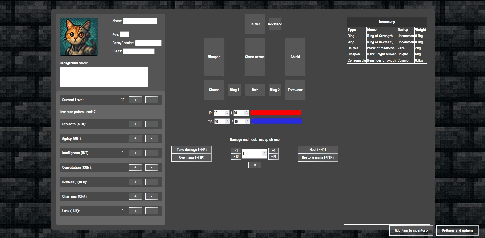

About
I'm a developer passionate about computers and technology. With a strong background in HTML, CSS and UX, I aim to create solutions and projects that lies between a great functionality and a user experience of undoubtful quality. Currently, I'm more inclined to enhance my front-end knowledge, but my studies encompass also back-end technologies.
In the past, during my internship and bachelor's education, I've had the opportunity to develop a variety of projects with various requirements that were essential to my technical repertoire, such as IoT(Internet of Things) devices managed by microcontrollers, Android application for data collection in a educational game and a remote controlled robot eqquiped with sensors to collect temperature, humidity and percentage of gases in the air surrounding it.
Aiming for career challenges and to be part of a company that values teamwork.
Projects
-

RPG Character Creator
The Character Creator is a web-based application designed to help players create and manage their RPG characters. It provides an interactive interface where users can input character details, distribute attribute points, equip items, and maintain an inventory, all within a structured and visually engaging layout.
HTML CSS JavaScript
-
Ambient Monitoring Robot
This project, called RMDA in portuguese, was designed to aid in monitoring and inspection routines in industrial environments, especially when there is a possibility of harmful gas leaks. While being controlled, the robot can also collect and display data such as gas concentration at its location, temperature, and humidity.
HTML CSS JavaScript
Experience
-
Aug. 2024 — Dec. 2024
Intern — Mix For You LTDA
- Developed and implemented a responsive website using HTML, CSS, and JavaScript;
- I produced technical documentation for the certification of a medical device, ensuring regulatory compliance;
- Collaborated in the structuring and planning of the front-end, contributing to the creation of intuitive interfaces;
- Performed testing and provided support in troubleshooting, optimizing the user experience;
- Used Git/GitHub for code control and versioning.
Technologies used: HTML, CSS, JavaScript, Git
Languages and tools
Education
-
2020 — 2024
Bachelor’s Degree - Computer Engineering
Universidade Santa Cecília - Santos, São Paulo, Brazil
-
2023 — 2023
Excel Course - Level: Advanced
Fundação Bradesco - São Paulo, Brazil